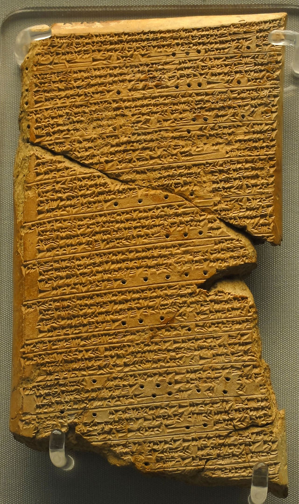

2018-08-06
根据《自然·天文学》杂志上发表的一项最新研究显示，我们现在还不能把火星，当做未来人类可以居住的地方，虽然前些天，有报道说火星上可能发现了液态水湖，但是不是光有水，人就可以生存的，火星上还缺了另外一个东西，就是二氧化碳。火星还未能居住 虽发现液态水 但缺少二氧化碳
火星的大气层很稀薄，如果大气层里没有足够的二氧化碳，来给这颗行星保温，那人类就没办法给火星表面提高温度。以现在火星表面的温度，人类是没法在上面生存的，想要在火星上待着，就只能一直穿着航天服。二氧化碳作用：保温 只能穿航天服
说起航天服，它的设计是很讲究的，里面都是高科技。一套航天服，贵的能有上千万美元。->设计讲究、贵
那设计航天服的时候，需要注意啥呢？你想想看，人活着需要很多东西，比如水、氧气、正常的温度、正常的大气压等等，这些东西宇宙里都没有，所以航天服得把这些都给准备好，人才能上天。需要人活着的各种必要条件
需要水呀、氧气呀，这些必备的条件，你肯定都知道，下面咱们来说一个你可能不知道的。设计航天服的时候，还有一点特别重要，就是得保证这套衣服，航天员不管做啥动作，比如伸个胳膊，迈个腿儿，这航天服的体积大小，是一点儿也不能变的。这是为什么呢？一点：体积不能变
我给你打个比方，你现在手里拿着一个气球，鼓鼓的，你俩手捏一捏，这气球的体积就会变小。在这个过程里，你就会发现，想让气球的体积变小，你得使劲儿才行，需要费力气。气球作类比 体积变小，费力气
航天服就像是气球一样，是封得严严实实的。所以航天员在航天服里面做动作，就跟捏气球是一样的，比方说他弯一下胳膊肘，就会挤压到这航天服的表面，航天服就会变形，就跟气球被捏变形了一样。弯胳膊肘-捏气球
但如果这时候，航天服的体积变了，比方说弯一下胳膊，把航天服压瘪了一点儿，那航天员就得费很多力气。如果航天服的体积变来变去，那航天员每做一个动作，就都像捏一次气球，都得费力气。你可别小看这个过程，如果真是这样，那航天员在天上活动，很快就会精疲力尽。体积变化，费力
所以设计航天服的时候，就有一个要求，要求航天服里面，不管航天员做啥动作，怎么折腾，体积都不能变。只要体积不变，航天员做动作的时候，就不需要额外的费力气。所以要求，体积不变，不费力
其实还是有点难以想象，航天服内的气体体积不变，弯胳膊肘时，附近的体积肯定变小，那意味着有地方变大？还是保证航天服内的压强不变？
根据英国皇家鸟类保护协会的一份研究显示，在英国、印度、加拿大的一些城市，由于汽车尾气的排放，城市里麻雀数量大幅减少。在二氧化氮浓度高的地方，麻雀数量下降得更明显。注意是二氧化氮，不是二氧化碳，它是汽车尾气里的一种气体。汽车尾气导致麻雀数量减少 二氧化氮
说起麻雀，不知道你发现没有，它有一个特点，就是跳来跳去的，好像不会走路似的。没错，麻雀确实不会走路，它只能蹦，这是为什么呢？麻雀->不会走路
你想像一下你走路，或者跑步的时候，是一个什么动作。一般是后腿往后蹬，给你一个力量，让你可以往前走。你蹬后腿的时候，注意你的脚腕儿，那有个关节，它可以活动，这样你蹬地的时候，腿跟地面的夹角是小于90度的。而你立正、站直的时候，你的腿跟地面的夹角就是90度。 脚腕有关节 蹬地
这下你知道麻雀为啥不能走路了吧，对，没错，因为麻雀没脚腕儿，麻雀的腿，跟脚丫子之间的角度，是不能变的。所以它不能走路，只能是直着蹦。不过麻雀的脚趾头可以弯曲，所以它能抓住树枝、电线，跟上面待着。麻雀没脚腕 脚趾头可以弯曲
根据英国BBC的报道，最近德国的考古学家确认，2017年在德国发现的一座图书馆遗址，是德国最古老的一座公共图书馆。它对老百姓开放，距离现在已经有1800年的历史了。德国发现古老的公共图书馆 1800年
说起图书馆，今天我来跟你说说，世界上第一座皇家图书馆。建造这个图书馆的古代帝王，名字还挺长，叫亚述巴尼拔，他是古代亚洲的一个国家——亚述国的国王，他建的图书馆，就叫亚述巴尼拔图书馆，距离现在有2700年的历史了。第一座皇家图书馆 亚述巴尼拔 2700年
这个国王干嘛要建一个图书馆呢？说起来也是个意外，亚述巴尼拔，本来是轮不到他当国王的，因为他还有个哥哥，是王位的继承人，可是这哥哥死得比他老爹还早。哥哥死后，亚述巴尼拔就成为了王位继承人，做了国王。 介绍亚述巴尼拔
一开始，这个亚述巴尼拔没准备继承王位，就想专心搞搞学术。他是一个学霸，非常喜欢学习。后来他继承了王位，在当时的国王里，数他认字儿多，藏书多，可以说是国王里特别有文化的一个。搞学术
亚述巴尼拔当了国王以后，可没有像一般文人那样，文绉绉的，反而是打仗特别厉害，周围的国家都怕他，他就借着这个机会，搞敲诈勒索。敲诈什么呢？一个学霸，当然是要书啊。“你们，乖乖儿的，把书都给我交出来！”就这么着，他从别的国家搜集来了好多书。 打仗厉害 敲诈书籍
当时的书，不是纸做的，都是大泥板，他也不嫌沉，总共收了3万多块泥板，下面是一块泥板的图片。从此以后，第一个属于国王私人的皇家图书馆，就诞生了，虽然是私人的，但这个皇家图书馆也向学者们开放。泥板 向学者开放

图书馆里面的书，也就是泥板上记载的内容，天文地理，文学数学，什么都有。其中最重要的一本书，叫《吉尔伽美什史诗》，这是人类历史上最古老的一部英雄史诗，比古希腊的《荷马史诗》还要早上千年。吉尔伽美什史诗 最古老的一部英雄史诗